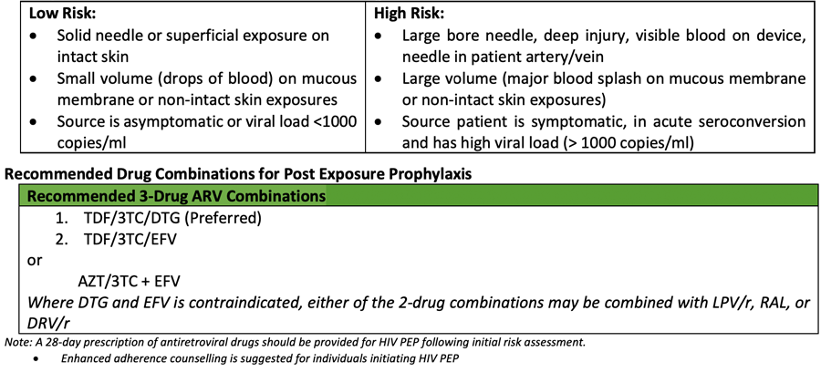
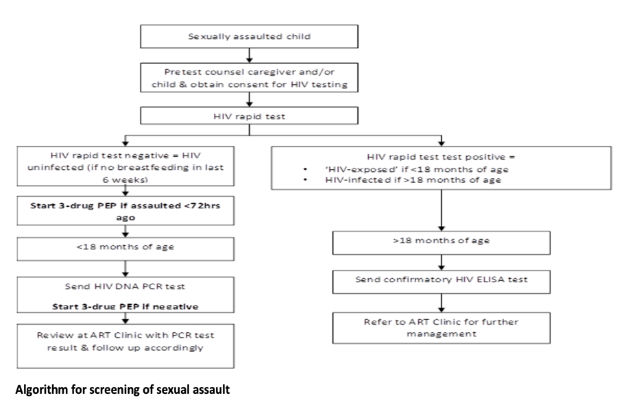

Preventive management of HIV is a broad term for different interventions that protect individuals from contracting/transmitting HIV infection.
Preventive management of HIV is a broad term for different interventions that protect individuals from contracting/transmitting HIV infection.
Pre-exposure prophylaxis is the preemptive use of ARV drugs to reduce the probability of HIV negative individuals acquiring HIV infection, especially in persons who are deemed at substantial risk of acquiring HIV.
Criteria for PrEP initiation
PrEP minimum package
The PrEP minimum package of services includes:
The preferred drug regimen for PrEP is the combination of daily TDF + FTC / TDF + 3TC. The alternate regimen for PrEP is a daily dose of TDF
Evaluating exposed person’s eligibility for HIV PEP involves assessing the following:
The exposure should be classified as “low risk” or “high risk” for HIV infection as below:

The possibility of HIV exposure from sexual assault should be assessed at the time of the post-assault examination. The benefit of PEP in the prevention of HIV infection should be discussed with the assault survivors if the risk of HIV exposure exists.
